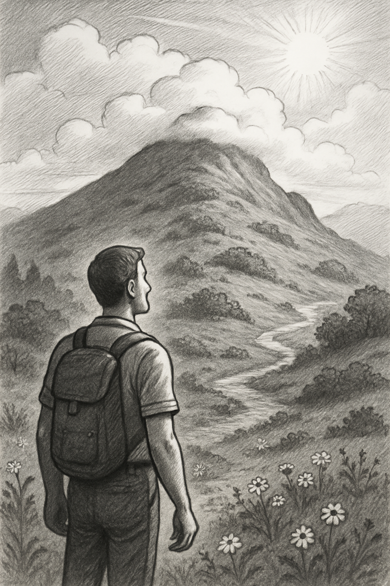

Фритрек и нулевой спринт: Подготовка к работе

Туман
Это было самое начало пути. На этом этапе важно было проникнуться основами и настроиться на учёбу. И, возможно, подумать, как новые знания могут повлиять на ваше будущее.
Это было очень волнующее время, я готовился освоить новую профессию. На тот момент у меня было туманное представление о том, какой объем знаний мне предстоит освоить. Я был абсолютно уверен в себе и своих силах. Покорение вершины мастерства казалось мне не очень сложной задачей.